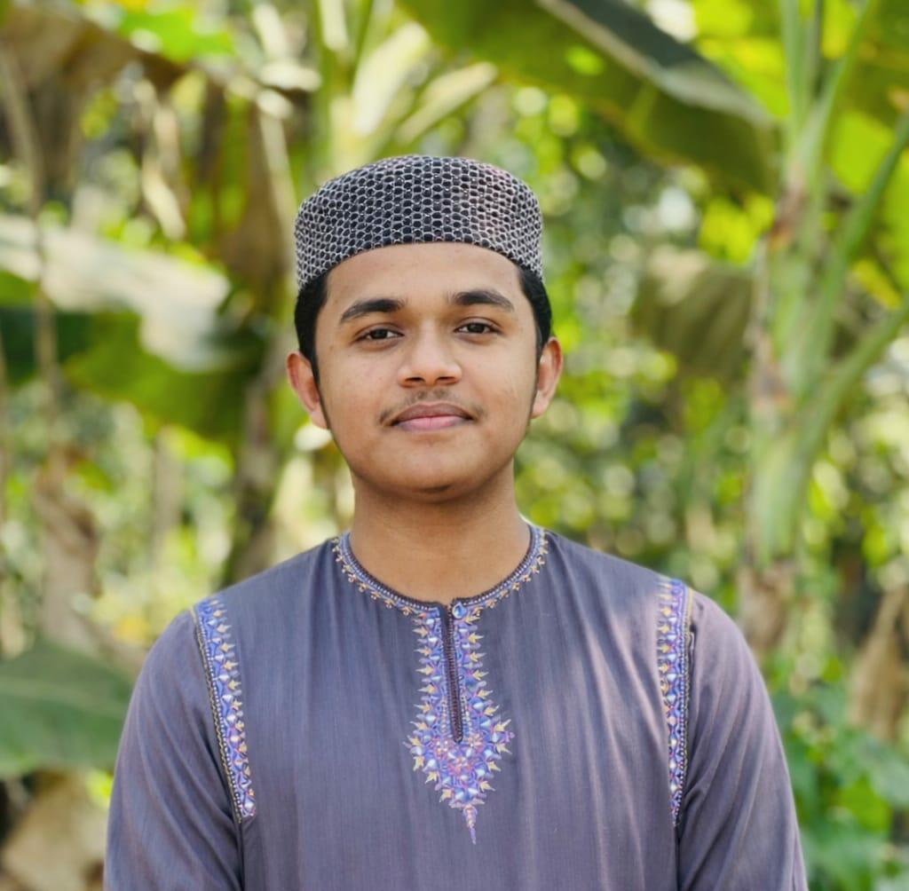
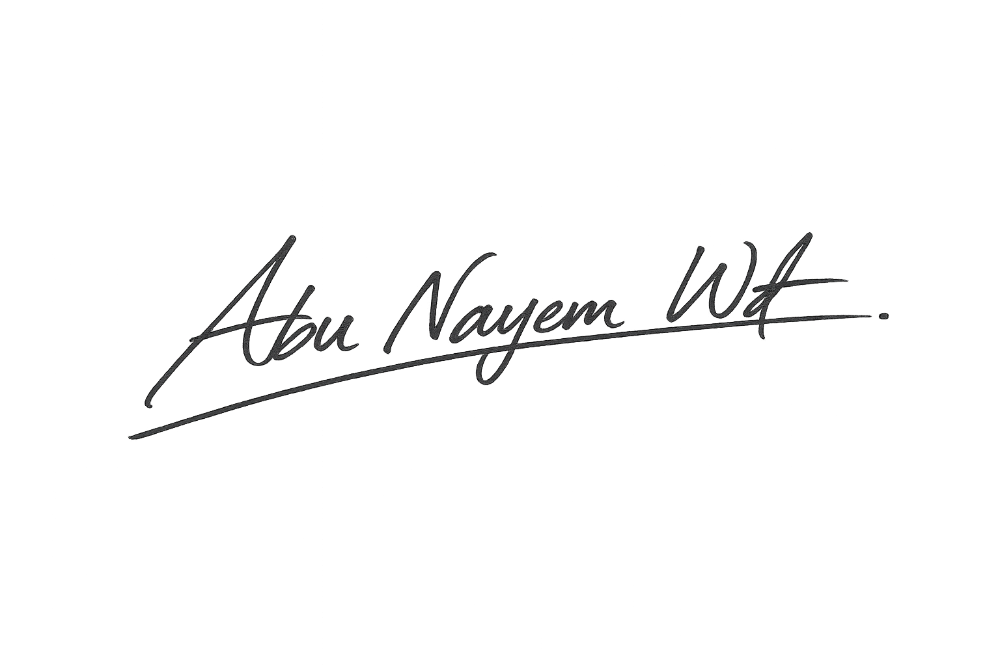

My Latest Works
Hi, i'm Abu Nayem, Experience Web Designer from Bangladesh.

I am—a young dreamer from Dumki Upazila of Patuakhali District of Barisal Division, Bangladesh. Currently, I am studying in my second year of honours at Darunnajat Siddiqia Kamil Madrasah, Dhaka Demra. My web design and development journey started in 2022. A keen interest in technology and an indomitable will to learn have led me on this path. Over the past 4 years, I have worked on various aspects of web design and have developed myself as skilled and confident.
I believe a beautiful and effective website is more than just design—it's an identity, a brand, and a story. So I combine creativity, care, and professionalism in every project. Besides studying, I love to practice music. I am a music singer, and music is a great source of solace for my soul. My goal is not just to be a successful freelancer, but to build a strong digital brand in the future.
"Delivering quality web solutions since 2022."
With over three years of experience in web development, I create modern and responsive websites with a strong focus on clean design, performance, and user experience. I continuously enhance my frontend development skills through real-world projects and consistent practice.
Delivering modern, responsive, and user-friendly websites tailored to client needs. Focused on clean design, optimized performance, and continuous skill improvement over the past three years.
Pursuing higher education while strengthening frontend development skills and building real-world projects. Focused on HTML, CSS, JavaScript, and WordPress, creating responsive and user-friendly websites. Continuously improving skills through hands-on practice and self-learning.
Pursuing higher education at Arabic University while completing a professional web development course at Coders Foundation. Focused on HTML, CSS, JavaScript, Wordpress and building real-world projects.
Hi, i'm Abu Nayem, Experience Web Designer from Bangladesh.
With over three years of experience in web development, I create modern and responsive websites with a strong focus on clean design, performance, and user experience. I continuously enhance my frontend development skills through real-world projects and consistent practice.

Dumki - Patuakhali - Angaria Bandar-(8602), Holding:-157, Barisal.
Dumki - Patuakhali - Angaria Darbar Sharif-(8602), Holding:-157, Barisal.
 Chat with me
Chat with me

{kind=link}
{kind=link}
{kind=link}
{kind=link}
{kind=link}
{kind=link}